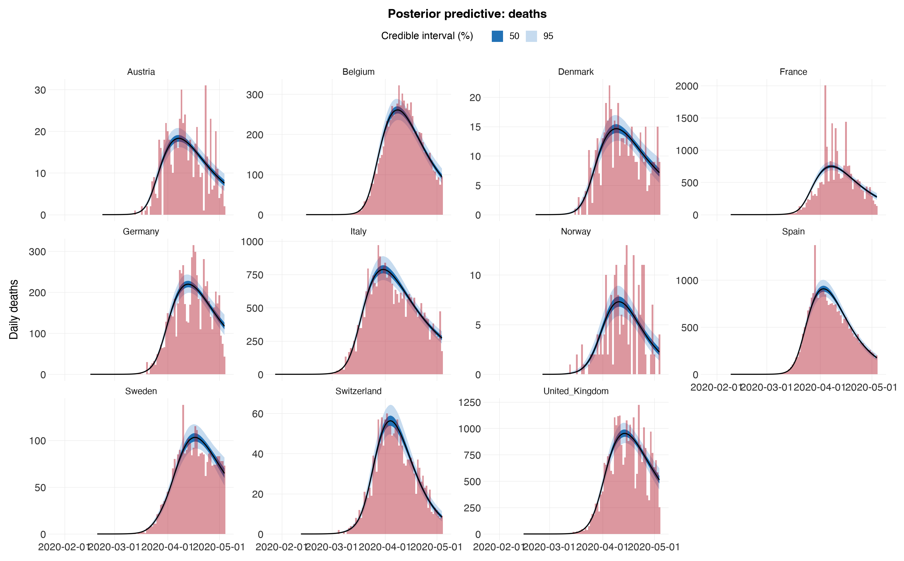
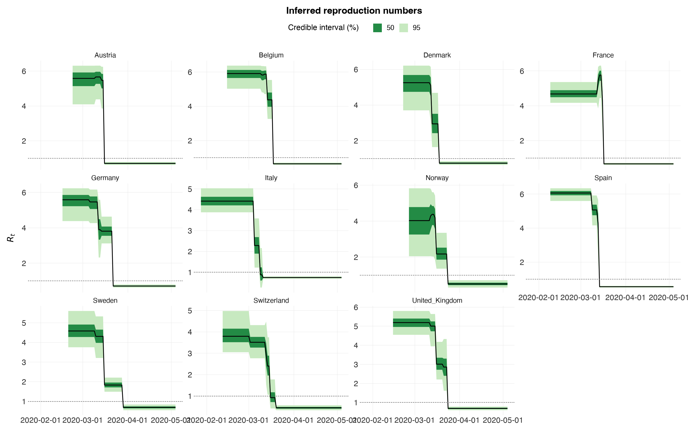
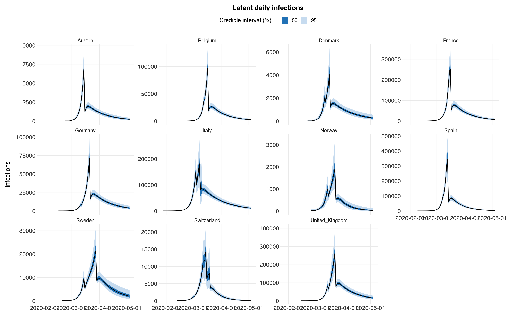
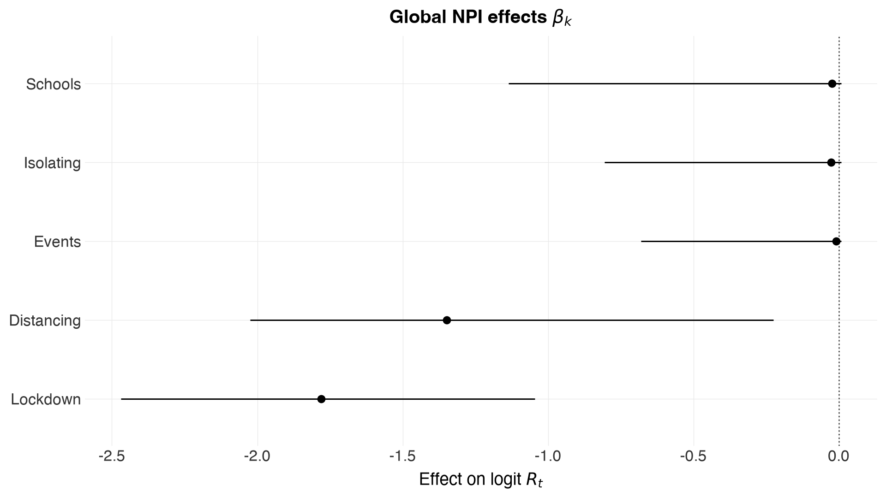
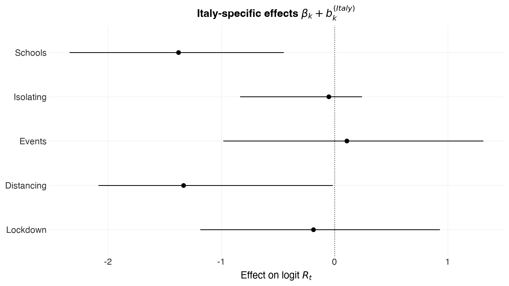
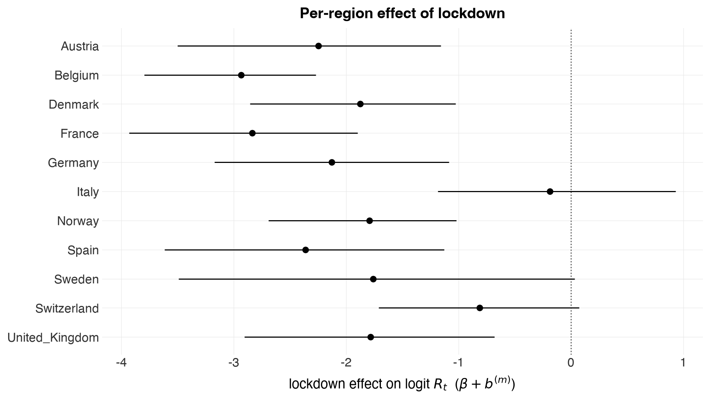
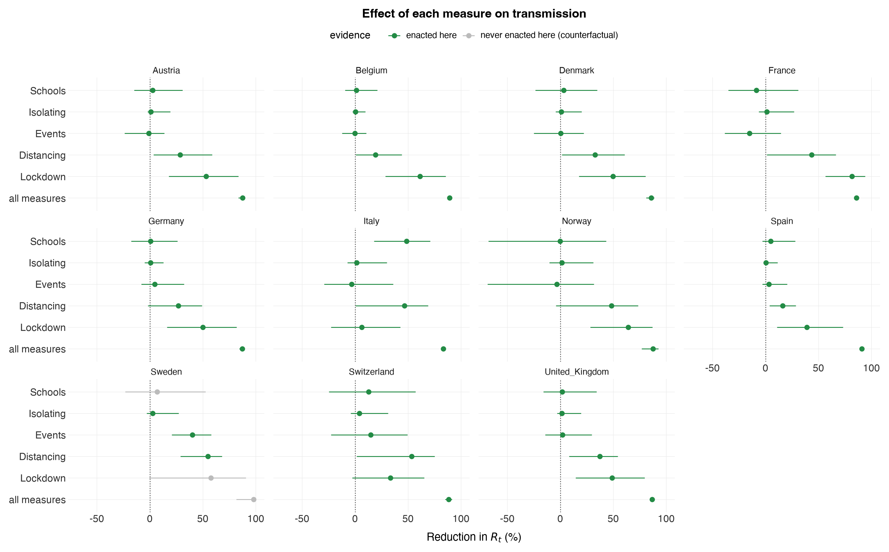
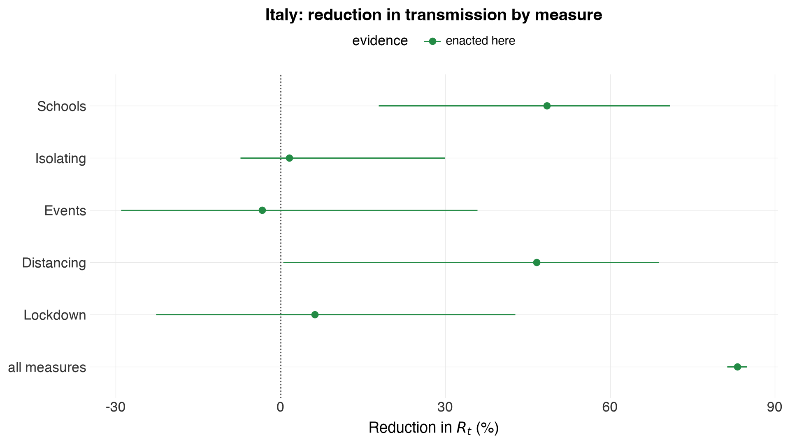
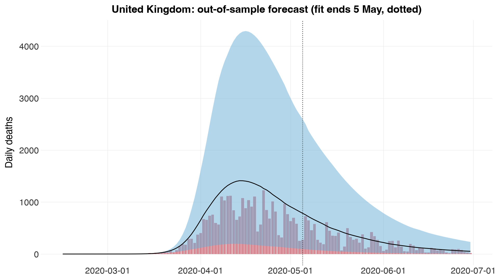
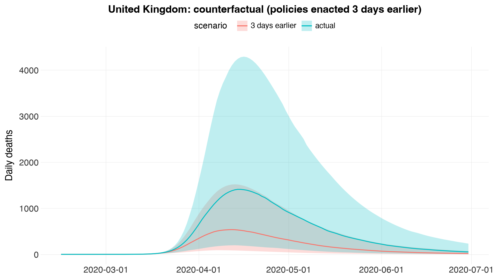

Assessing the Effects of Interventions on COVID-19¶
This is the Python counterpart of the R vignette
europe-covid
(Multilevel Modeling). It is a jupytext notebook stored as a plain
.py file (percent format): open it directly in Jupyter/VS Code, or pair it
with an .ipynb via jupytext --sync.
We use a hierarchical (partially pooled) model to estimate the effect of non-pharmaceutical interventions (NPIs) on the transmissibility of COVID-19, following Flaxman et al. (2020): the effect of five measures enacted in March 2020 across 11 European countries, fit to daily death data.
Estimation with MCMC, not Variational Bayes. The R vignette fits this model with Variational Bayes (
algorithm = "fullrank") for speed, and notes that VB understates uncertainty ("relatively narrow intervals ... an artifact of using Variational Bayes"). Here we instead run full MCMC (NUTS, via nutpie), so the credible intervals are the genuine posterior ones.
import numpy as np
import pandas as pd
import arviz as az
from plotnine import aes, geom_col, geom_line, geom_ribbon, geom_vline, ggplot, labs
import epidemia as epi
from epidemia.plots import save_plot, theme_epidemia
Data¶
epi.europe_covid2() returns the EuropeCovid2 dataset (the same data as the
R package): daily cases and deaths and the five binary NPI indicators for 11
countries, up to 1 July 2020, plus the serial interval (si) and the
infection-to-death delay (inf2death).
['schools_universities', 'self_isolating_if_ill', 'public_events', 'social_distancing_encouraged', 'lockdown']
| id | country | date | cases | deaths | schools_universities | self_isolating_if_ill | public_events | lockdown | social_distancing_encouraged | pop | |
|---|---|---|---|---|---|---|---|---|---|---|---|
| 0 | AT | Austria | 2020-01-03 | 0.0 | 0.0 | 0 | 0 | 0 | 0 | 0 | NaN |
| 1 | AT | Austria | 2020-01-04 | 0.0 | 0.0 | 0 | 0 | 0 | 0 | 0 | NaN |
| 2 | AT | Austria | 2020-01-05 | 0.0 | 0.0 | 0 | 0 | 0 | 0 | 0 | NaN |
| 3 | AT | Austria | 2020-01-06 | 0.0 | 0.0 | 0 | 0 | 0 | 0 | 0 | NaN |
| 4 | AT | Austria | 2020-01-07 | 0.0 | 0.0 | 0 | 0 | 0 | 0 | 0 | NaN |
As in the R vignette, seeding for each country begins 30 days before cumulative
deaths first exceed 10, and — to demonstrate forecasting later — we fit only up
to the 5th of May 2020, holding out the rest. epi.prepare_panel performs this
per-country filtering and returns padded, model-ready arrays.
fit = epi.prepare_panel(
data, epi.EUROPE_COVID_NPIS,
seed_offset=30, death_threshold=10, fit_until="2020-05-05",
)
start_end = pd.DataFrame({
"country": fit.regions,
"start": [d[0] for d in fit.dates],
"end": [d[-1] for d in fit.dates],
"days": fit.lengths,
})
start_end
| country | start | end | days | |
|---|---|---|---|---|
| 0 | Austria | 2020-02-23 | 2020-05-04 | 72 |
| 1 | Belgium | 2020-02-15 | 2020-05-04 | 80 |
| 2 | Denmark | 2020-02-22 | 2020-05-04 | 73 |
| 3 | France | 2020-02-09 | 2020-05-04 | 86 |
| 4 | Germany | 2020-02-16 | 2020-05-04 | 79 |
| 5 | Italy | 2020-01-28 | 2020-05-04 | 98 |
| 6 | Norway | 2020-02-26 | 2020-05-04 | 69 |
| 7 | Spain | 2020-02-09 | 2020-05-04 | 86 |
| 8 | Sweden | 2020-02-20 | 2020-05-04 | 75 |
| 9 | Switzerland | 2020-02-12 | 2020-05-04 | 83 |
| 10 | United_Kingdom | 2020-02-15 | 2020-05-04 | 80 |
Model components¶
As in epidemia, the model has three components: transmission,
infections, and observations.
Transmission¶
Country-specific reproduction numbers are a step function of the five NPIs:
$$ R^{(m)}t = 6.5 \cdot \mathrm{sigmoid}!\Big(b^{(m)}_0 + \sum}^{5}\big(\beta_k + b^{(m)k\big) I^{(m)}\Big). $$
- $\beta_k$ are fixed (global) NPI effects with a shifted Gamma prior,
$\beta_k = \tfrac{\log 1.05}{6} - g_k$, $g_k \sim \mathrm{Gamma}(1/6, 1)$ —
this makes a measure a priori reduce transmission (with a small allowance
to increase it), matching
shifted_gamma(shape = 1/6, scale = 1, shift = log(1.05)/6). - $b^{(m)}_0, b^{(m)}_k$ are partially pooled country effects,
$b^{(m)}_0 \sim N(0, \sigma_0)$ and $b^{(m)}_k \sim N(0, \sigma_k)$, with
$\sigma_0 \sim \mathrm{Gamma}(2, 0.25)$ and $\sigma_k \sim \mathrm{Gamma}(0.5, 0.25)$.
This is the
(1 + npis || country)term with thedecovcovariance prior. - The link
scaled_logit(6.5)keeps $R$ in $(0, 6.5)$ with midpoint $3.25$.
Infections¶
Basic (deterministic) renewal dynamics: infections are seeded over 6 days and
propagated by the generation kernel ec.si. The seeds are themselves
partially pooled through a shared mean,
$\tau \sim \mathrm{Exp}(0.03)$ and $i^{(m)} \mid \tau \sim \mathrm{Exp}(\tau)$
— R's prior_seeds = hexp(prior_aux = exponential(0.03)) — so a country with
little early death data borrows epidemic-size information from the others.
Both kernels are lag-1-first: ec.si[0] weights infections one day back,
ec.inf2death[0] weights infections one day before the death. An infection is
never observed on the day it happens, matching R's Stan (which sums over
infections[start .. t-1] for both), so the vectors from the R data objects
drop in unchanged.
Observations¶
Deaths are modelled with a constant infection-fatality ratio (IFR),
$\mathrm{IFR} = 0.02 \cdot \mathrm{sigmoid}(\alpha)$, $\alpha \sim N(0, 0.2)$
(a prior mean IFR of $1\%$), convolved with ec.inf2death, and a
negative-binomial likelihood whose reciprocal dispersion is
$10 + 5\cdot\mathrm{HalfNormal}(1)$ — R's epiobs default
prior_aux = normal(location = 10, scale = 5).
All of this is captured by MultilevelConfig, whose defaults already match
the priors and links above.
config = epi.MultilevelConfig(
gen=ec.si, # generation kernel (serial interval)
i2o=ec.inf2death, # infection-to-death delay
R_link_K=6.5, # scaled_logit(6.5) on R
ifr_link_K=0.02, # IFR in (0, 2%)
seed_days=6,
)
config
MultilevelConfig(gen=array([1.83261825e-02, 6.65923070e-02, 1.01913891e-01, 1.17716779e-01,
1.18385594e-01, 1.09634706e-01, 9.61232167e-02, 8.10548507e-02,
6.63831287e-02, 5.31489565e-02, 4.17894990e-02, 3.23750574e-02,
2.47742310e-02, 1.87612758e-02, 1.40813981e-02, 1.04874277e-02,
7.75805852e-03, 5.70485457e-03, 4.17284495e-03, 3.03779926e-03,
2.20207208e-03, 1.59010775e-03, 1.14418671e-03, 8.20682873e-04,
5.86918954e-04, 4.18607884e-04, 2.97819806e-04, 2.11396111e-04,
1.49730189e-04, 1.05841262e-04, 7.46778410e-05, 5.25983179e-05,
3.69864509e-05, 2.59685201e-05, 1.82064266e-05, 1.27470904e-05,
8.91331246e-06, 6.22499659e-06, 4.34249019e-06, 3.02596565e-06,
2.10638770e-06, 1.46481847e-06, 1.01770269e-06, 7.06429240e-07,
4.89942093e-07, 3.39520273e-07, 2.35096950e-07, 1.62668352e-07,
1.12472796e-07, 7.77128787e-08, 5.36601085e-08, 3.70283537e-08,
2.55359592e-08, 1.76000896e-08, 1.21236100e-08, 8.34665304e-09,
5.74334003e-09, 3.94999455e-09, 2.71528766e-09, 1.86564841e-09,
1.28128341e-09, 8.79566309e-10, 6.03539996e-10, 4.13964973e-10,
2.83822632e-10, 1.94518623e-10, 1.33263733e-10, 9.12647735e-11,
6.24800212e-11, 4.27590185e-11, 2.92530444e-11, 2.00064409e-11,
1.36783918e-11, 9.34896605e-12, 6.38800124e-12, 4.36350955e-12,
2.97972758e-12, 2.03426165e-12, 1.38844491e-12, 9.47464329e-13,
6.46260823e-13, 4.40758541e-13, 3.00426350e-13, 2.04947170e-13,
1.39555034e-13, 9.51461132e-14, 6.47260023e-14, 4.41868764e-14,
3.00870440e-14, 2.04281037e-14, 1.38777878e-14, 9.54791801e-15,
6.43929354e-15, 4.32986980e-15, 2.99760217e-15, 1.99840144e-15,
1.44328993e-15, 8.88178420e-16, 6.66133815e-16, 4.44089210e-16]), i2o=array([1.30000e-06, 4.25000e-05, 2.28600e-04, 7.81100e-04, 1.92840e-03,
3.80800e-03, 6.47090e-03, 9.94050e-03, 1.40458e-02, 1.86132e-02,
2.34308e-02, 2.81585e-02, 3.27993e-02, 3.67371e-02, 4.02502e-02,
4.31422e-02, 4.50086e-02, 4.63019e-02, 4.70288e-02, 4.66678e-02,
4.59662e-02, 4.44947e-02, 4.28173e-02, 4.08481e-02, 3.85647e-02,
3.59808e-02, 3.33518e-02, 3.08189e-02, 2.81390e-02, 2.55677e-02,
2.31206e-02, 2.07830e-02, 1.86044e-02, 1.65310e-02, 1.45487e-02,
1.30146e-02, 1.13813e-02, 9.92550e-03, 8.69520e-03, 7.53010e-03,
6.47090e-03, 5.63180e-03, 4.80890e-03, 4.18190e-03, 3.54210e-03,
3.04100e-03, 2.57290e-03, 2.21840e-03, 1.85340e-03, 1.56670e-03,
1.32030e-03, 1.11760e-03, 9.25000e-04, 7.99400e-04, 6.56500e-04,
5.65900e-04, 4.53000e-04, 3.80700e-04, 3.24500e-04, 2.61600e-04,
2.16500e-04, 1.82600e-04, 1.46600e-04, 1.17100e-04, 9.91000e-05,
7.94000e-05, 7.13000e-05, 5.87000e-05, 4.91000e-05, 4.04000e-05,
3.34000e-05, 2.72000e-05, 2.38000e-05, 1.57000e-05, 1.49000e-05,
1.18000e-05, 8.80000e-06, 8.30000e-06, 6.80000e-06, 5.20000e-06,
4.70000e-06, 2.40000e-06, 2.50000e-06, 3.00000e-06, 1.60000e-06,
1.10000e-06, 1.50000e-06, 1.30000e-06, 7.00000e-07, 5.00000e-07,
4.00000e-07, 1.00000e-07, 1.00000e-07, 4.00000e-07, 3.00000e-07,
3.00000e-07, 2.00000e-07, 2.00000e-07, 2.00000e-07, 1.00000e-07,
1.00000e-07]), R_link_K=6.5, ifr_link_K=0.02, beta_shape=0.16666666666666666, beta_scale=1.0, beta_shift=0.008131694028238675, sd_intercept_shape=2.0, sd_slope_shape=0.5, sd_scale=0.25, sd_slope_fixed=None, ifr_intercept_scale=0.2, seed_days=6, seed_pooling=True, seed_aux_rate=0.03, seed_prior_mean=30.0, dispersion_loc=10.0, dispersion_scale=5.0)
Model fitting (MCMC)¶
We fit with nutpie's NUTS sampler. For a quick pass use fewer draws; for
publication-quality intervals increase draws/tune (e.g. 1000/1000) and use
4 chains. This is genuine Hamiltonian Monte Carlo — not the Variational
Bayes used in the R vignette.
This takes a while — roughly an hour for 11 countries at these settings, so the progress bar is on by default (the compile step is announced separately, since nutpie reports nothing during it and it is not fast either).
target_accept defaults to 0.95, not nutpie's 0.8. The funnel geometry of
a hierarchical model — the between-country SDs against the non-centred country
effects — gives hundreds of divergences at 0.8 here. fit_multilevel warns if
any survive; a divergent fit's intervals should not be quoted.
adaptation="low_rank" matters for this model, and not for a cosmetic
reason. The NPI coefficients are strongly correlated in the posterior (they
are collinear in the data), which makes a long thin ridge that a diagonal mass
matrix cannot follow. With the default "diag", beta[schools] and
beta[social_distancing_encouraged] come out at $\hat{R} \approx 1.08$–$1.11$
with an effective sample size of 25–36 out of 4000 — not converged, and
their point estimates are visibly wrong as a result (social distancing shifts
from $-1.11$ to $-1.35$ once the sampler can actually traverse the ridge).
"low_rank" estimates a low-rank correction to the mass matrix, which is
exactly the right tool for a correlated posterior, and brings every
$\hat{R} \le 1.04$.
The lesson generalises: divergences and $\hat{R}$ are different failures.
Raising target_accept fixes the funnel; only a better mass matrix fixes the
ridge. Check both.
idata = epi.fit_multilevel(
fit, config, draws=1000, tune=2000, chains=4, seed=12345,
adaptation="low_rank", target_accept=0.99,
)
print("divergences:", int(idata.sample_stats["diverging"].sum()))
az.summary(idata, var_names=["beta", "sd", "ifr", "reciprocal_dispersion", "seed_tau"])
[epidemia] compiling the log-density (numba backend)...
done in 20.7s
[epidemia] sampling 4 chains x (2000 tune + 1000 draws)
Sampler Progress
Total Chains: 4
Active Chains: 0
Finished Chains: 4
Sampling for an hour
Estimated Time to Completion: now
| Progress | Draws | Divergences | Step Size | Gradients/Draw |
|---|---|---|---|---|
| 3000 | 0 | 0.02 | 1023 | |
| 3000 | 0 | 0.01 | 1023 | |
| 3000 | 0 | 0.01 | 1023 | |
| 3000 | 0 | 0.01 | 1023 |
[epidemia] sampled in 2989.4s
divergences: 0
| mean | sd | hdi_3% | hdi_97% | mcse_mean | mcse_sd | ess_bulk | ess_tail | r_hat | |
|---|---|---|---|---|---|---|---|---|---|
| beta[schools_universities] | -0.237 | 0.393 | -1.067 | 0.008 | 0.033 | 0.029 | 50.0 | 131.0 | 1.07 |
| beta[self_isolating_if_ill] | -0.174 | 0.288 | -0.763 | 0.008 | 0.016 | 0.015 | 95.0 | 108.0 | 1.04 |
| beta[public_events] | -0.124 | 0.235 | -0.625 | 0.008 | 0.013 | 0.017 | 314.0 | 238.0 | 1.01 |
| beta[social_distancing_encouraged] | -1.278 | 0.518 | -1.989 | 0.008 | 0.040 | 0.032 | 200.0 | 98.0 | 1.02 |
| beta[lockdown] | -1.771 | 0.436 | -2.597 | -0.966 | 0.013 | 0.012 | 1111.0 | 845.0 | 1.00 |
| sd[0] | 1.434 | 0.302 | 0.937 | 2.041 | 0.008 | 0.005 | 1329.0 | 2150.0 | 1.00 |
| sd[1] | 0.650 | 0.320 | 0.000 | 1.144 | 0.021 | 0.010 | 200.0 | 179.0 | 1.02 |
| sd[2] | 0.124 | 0.165 | 0.000 | 0.435 | 0.007 | 0.011 | 483.0 | 470.0 | 1.01 |
| sd[3] | 0.674 | 0.250 | 0.224 | 1.167 | 0.011 | 0.008 | 453.0 | 322.0 | 1.01 |
| sd[4] | 0.244 | 0.266 | 0.000 | 0.759 | 0.018 | 0.014 | 244.0 | 417.0 | 1.01 |
| sd[5] | 0.926 | 0.260 | 0.466 | 1.424 | 0.007 | 0.005 | 1324.0 | 1350.0 | 1.00 |
| ifr | 0.010 | 0.001 | 0.008 | 0.012 | 0.000 | 0.000 | 4085.0 | 3519.0 | 1.00 |
| reciprocal_dispersion | 15.382 | 1.239 | 13.206 | 17.732 | 0.021 | 0.020 | 3368.0 | 2617.0 | 1.00 |
| seed_tau | 26.011 | 9.754 | 10.326 | 42.984 | 0.169 | 0.228 | 3656.0 | 3082.0 | 1.00 |
Check the diagnostics before reading anything off this fit — r_hat should be
$\le 1.01$ and ess_bulk in the hundreds at least. If beta[...] rows have a
poor r_hat, the effect estimates below are not trustworthy no matter how
reasonable they look.
summ = az.summary(idata, var_names=["beta", "sd"])
bad = summ[(summ["r_hat"] > 1.01) | (summ["ess_bulk"] < 400)]
if len(bad):
print("NOT CONVERGED — do not quote these:")
print(bad[["mean", "ess_bulk", "r_hat"]].to_string())
else:
print(f"all clear: max r_hat = {summ['r_hat'].max():.3f}, "
f"min ess_bulk = {summ['ess_bulk'].min():.0f}")
NOT CONVERGED — do not quote these:
mean ess_bulk r_hat
beta[schools_universities] -0.237 50.0 1.07
beta[self_isolating_if_ill] -0.174 95.0 1.04
beta[public_events] -0.124 314.0 1.01
beta[social_distancing_encouraged] -1.278 200.0 1.02
sd[1] 0.650 200.0 1.02
sd[4] 0.244 244.0 1.01
Posterior predictive checks¶
Expected deaths (posterior median and 50 %/95 % credible bands) against the
observed daily deaths, one panel per country — the counterpart of the R
vignette's plot_obs(fm, type = "deaths", levels = c(50, 95)).
Rt, infections and E_deaths are stored in the posterior indexed by
region, so epi.plots draws every country for you: pass the fit object
(the prepare_panel result) as data= and each region is placed on its own
dates — remember each region's column t is a different calendar day, and
each region's padded tail is dropped. Every plot is written to figures/
(override with $EPIDEMIA_FIGDIR); pass save=False to skip.
[epidemia] saved figures/deaths-ppc.png

Reproduction numbers¶
The inferred $R^{(m)}_t$ per country (a step function of the NPIs). We expect it to fall below one in each country as measures come into force.
[epidemia] saved figures/rt-by-country.png

Latent infections, likewise per country:
epi.plots.plot_infections(idata, data=fit, save="infections-by-country",
title="Latent daily infections")
[epidemia] saved figures/infections-by-country.png

Effect sizes¶
Global NPI effects $\beta_k$ — the average effect of each measure across countries. A large negative coefficient means a strong reduction in transmission. As in the R analysis, lockdown is the most effective on average.
How to read this plot — the measures are highly collinear. Most countries enacted all five NPIs within a few days of each other (Germany banned public events on the same day it locked down), so the individual $\beta_k$ are only weakly identified: the data constrain their sum far better than the split between them. The R vignette makes the same point — "when repeating this analysis with full MCMC, we observe that the intervals for all policies other than lockdown overlap with zero". So an interval that straddles zero here means "not separately identifiable from the other measures", not "this measure did nothing". The cell after next quantifies exactly that.
labels = ["Schools", "Isolating", "Events", "Distancing", "Lockdown"]
epi.plots.plot_effects(idata, labels=labels, save="effects-global")
[epidemia] saved figures/effects-global.png

Because effects are partially pooled, the country-specific effect of measure $k$ is $\beta_k + b^{(m)}_k$, which can differ from the global $\beta_k$. Below we extract these for Italy (compare with the R vignette's Italy panel).
[epidemia] saved figures/effects-italy.png

Collinearity: what is identified¶
The individual coefficients trade off against one another, but their total — the combined effect once every measure is in force — is pinned down by the data. Comparing the two tells you how much of a small $\beta_k$ is a real "no effect" and how much is just collinearity moving the effect to a neighbour.
beta = np.asarray(idata.posterior["beta"].stack(s=("chain", "draw"))) # (K, S)
total = beta.sum(axis=0)
print("Combined effect of all five measures (logit Rt scale):")
print(f" median {np.median(total):+.2f} 90% CI "
f"[{np.percentile(total, 5):+.2f}, {np.percentile(total, 95):+.2f}]")
print("\nIndividual measures — note how much wider these are relative to their size:")
for k, lab in enumerate(labels):
d = beta[k]
print(f" {lab:11s} median {np.median(d):+.2f} 90% CI "
f"[{np.percentile(d, 5):+.2f}, {np.percentile(d, 95):+.2f}]"
f" P(effect < 0) = {(d < 0).mean():.2f}")
print("\nPosterior correlation between the coefficients (collinearity fingerprint):")
print(pd.DataFrame(np.round(np.corrcoef(beta), 2), index=labels, columns=labels).to_string())
Combined effect of all five measures (logit Rt scale):
median -3.59 90% CI [-4.38, -2.78]
Individual measures — note how much wider these are relative to their size:
Schools median -0.02 90% CI [-1.14, +0.01] P(effect < 0) = 0.60
Isolating median -0.03 90% CI [-0.81, +0.01] P(effect < 0) = 0.62
Events median -0.01 90% CI [-0.68, +0.01] P(effect < 0) = 0.56
Distancing median -1.35 90% CI [-2.02, -0.22] P(effect < 0) = 0.99
Lockdown median -1.78 90% CI [-2.47, -1.05] P(effect < 0) = 1.00
Posterior correlation between the coefficients (collinearity fingerprint):
Schools Isolating Events Distancing Lockdown
Schools 1.00 0.06 -0.14 -0.49 -0.02
Isolating 0.06 1.00 -0.05 -0.37 -0.02
Events -0.14 -0.05 1.00 -0.02 -0.23
Distancing -0.49 -0.37 -0.02 1.00 -0.27
Lockdown -0.02 -0.02 -0.23 -0.27 1.00
The per-country lockdown effect¶
The global $\beta_\text{lockdown}$ is one number for all 11 countries. What actually drives country $m$'s $R_t$ is $\beta_k + b^{(m)}_k$ — so this is the plot to read if the question is "did lockdown do anything here?" Sweden is the instructive case: it never locked down, so its lockdown column is identically zero, its likelihood says nothing about the effect, and its posterior is just the shared prior. The model explains Sweden through its country-specific intercept instead — exactly the point the R vignette makes.
[epidemia] saved figures/lockdown-by-country.png

Effect sizes as a percent reduction in transmission¶
A coefficient on the logit scale is hard to feel. epi.effect_table converts
it into the quantity people actually want — by what percent did this measure
cut transmission?
Why not just $1 - e^{\beta_k}$? Because that is the answer for a log link, and this model uses
scaled_logit(6.5): $R = 6.5\,\operatorname{sigmoid}(\eta)$. A coefficient therefore does not map to a constant multiplicative effect — the same $\beta$ buys a bigger percentage in a country with a low $R_0$ than in one with a high $R_0$. On this data $1-e^{\beta}$ overstates lockdown by roughly 9 percentage points.effect_tableinstead does the counterfactual properly, per posterior draw: compare $6.5\,\operatorname{sigmoid}(b_0^{(m)})$ (no measures) with $6.5\,\operatorname{sigmoid}(b_0^{(m)} + \beta_k + b_k^{(m)})$ (measure $k$ on). That is also why the answer is reported per country rather than as one global number.
tab = epi.effect_table(idata, config, data=fit)
pct = tab[tab["kind"] == "pct"]
print("Reduction in R_t (%), median [90% CI] — per country\n")
piv = pct.pivot(index="region", columns="term", values="median")
print(piv[[*fit.npis, "all measures"]].round(1).to_string())
print("\n\nAll five measures combined:\n")
for _, r in pct[pct["term"] == "all measures"].iterrows():
print(f" {r['region']:16s} {r['median']:5.1f}% [{r['lo']:5.1f}, {r['hi']:5.1f}]")
print("\n\nR_0 -> R_t once every measure is in force:\n")
R = tab[tab["kind"] == "R"]
r0 = R[R["term"] == "R_0 (no measures)"].set_index("region")
ra = R[R["term"] == "R_t (all measures)"].set_index("region")
for reg in fit.regions:
print(f" {reg:16s} {r0.loc[reg, 'median']:.2f} -> {ra.loc[reg, 'median']:.2f}")
Reduction in R_t (%), median [90% CI] — per country
term schools_universities self_isolating_if_ill public_events social_distancing_encouraged lockdown all measures
region
Austria 2.8 0.8 -1.1 28.5 53.2 87.4
Belgium 1.4 0.4 -0.2 19.4 61.2 89.1
Denmark 3.1 0.8 0.5 32.7 49.8 85.9
France -8.7 1.3 -15.1 43.5 81.7 86.0
Germany 0.7 0.6 4.7 26.8 50.1 87.3
Italy 48.5 1.6 -3.3 46.6 6.2 83.2
Norway -0.1 1.6 -3.2 48.2 64.1 87.4
Spain 5.0 0.5 3.4 16.3 39.0 90.9
Sweden 6.8 2.6 40.0 54.9 57.6 97.8
Switzerland 12.9 4.0 14.8 53.5 33.5 88.4
United_Kingdom 1.7 1.5 2.2 37.4 49.0 86.8
All five measures combined:
Austria 87.4% [ 83.6, 89.4]
Belgium 89.1% [ 87.3, 90.4]
Denmark 85.9% [ 81.0, 88.6]
France 86.0% [ 84.0, 87.9]
Germany 87.3% [ 84.4, 89.1]
Italy 83.2% [ 81.3, 84.9]
Norway 87.4% [ 76.8, 92.6]
Spain 90.9% [ 89.9, 91.8]
Sweden 97.8% [ 81.6, 99.7]
Switzerland 88.4% [ 85.0, 91.5]
United_Kingdom 86.8% [ 84.7, 88.7]
R_0 -> R_t once every measure is in force:
Austria 5.57 -> 0.70
Belgium 5.90 -> 0.64
Denmark 5.24 -> 0.73
France 4.67 -> 0.66
Germany 5.58 -> 0.70
Italy 4.41 -> 0.74
Norway 4.02 -> 0.50
Spain 6.06 -> 0.55
Sweden 4.58 -> 0.10
Switzerland 3.79 -> 0.44
United_Kingdom 5.18 -> 0.68
The same thing as a plot. Measures a country never enacted are greyed out: there, the percentage is a counterfactual drawn from the pooled prior ("what lockdown would have done in Sweden"), not a measured effect, and it should not be read alongside the others as if it were evidence.
epi.plots.plot_percent_effects(idata, config, data=fit, labels=labels,
save="percent-effects-by-country")
[epidemia] saved figures/percent-effects-by-country.png

epi.plots.plot_percent_effects(idata, config, data=fit, group="Italy", labels=labels,
save="percent-effects-italy",
title="Italy: reduction in transmission by measure")
[epidemia] saved figures/percent-effects-italy.png

Forecasting and counterfactuals¶
Forecasting in epidemia means swapping in a new data frame — extending the
dates, or altering covariates for a counterfactual. We reproduce this here by
forward-simulating the renewal process from the posterior draws, reusing the
package's NumPy renewal reference (epi.renewal_infections). The function
below takes a per-country NPI design (of any length) and returns posterior
deaths, so the same code serves both out-of-sample forecasts and
counterfactuals.
def posterior_deaths(idata, X_list, config, n_draws=400, seed=0):
"""Posterior expected deaths per region for arbitrary NPI designs.
``X_list[m]`` is a ``(T_m, K)`` design matrix (possibly longer than the
fitted window, or with shifted policies). Returns a list of ``(n_draws,
T_m)`` arrays of expected daily deaths.
"""
post = idata.posterior
rng = np.random.default_rng(seed)
S = post.sizes["chain"] * post.sizes["draw"]
take = rng.choice(S, size=min(n_draws, S), replace=False)
def flat(name):
a = np.asarray(post[name].stack(s=("chain", "draw")))
return np.moveaxis(a, -1, 0)[take] # (draws, ...)
beta = flat("beta") # (D, K)
b0 = flat("b0") # (D, M)
b = flat("b") # (D, M, K)
seed_ = flat("seed") # (D, M)
ifr = flat("ifr") # (D,)
gen = np.asarray(config.gen)
i2o = np.asarray(config.i2o)
v = config.seed_days
out = []
for m, X in enumerate(X_list):
X = np.asarray(X, dtype=float)
T = X.shape[0]
deaths = np.empty((len(take), T))
for j in range(len(take)):
eta = b0[j, m] + X @ (beta[j] + b[j, m])
R = config.R_link_K / (1.0 + np.exp(-eta))
seeds = np.full(v, seed_[j, m])
infections = epi.renewal_infections(R, seeds, gen)
# Use the package's own reference rather than a hand-rolled
# convolution, so the forecast applies the *same* lag convention as
# the model that produced these draws.
deaths[j] = epi.expected_observations(infections, i2o, ifr[j])[:T]
out.append(deaths)
return out
Out-of-sample forecast. We rebuild the design for each country over the full period (through the end of the data), fit only to data before 5 May, and forecast beyond it. Here we show the United Kingdom.
full = epi.prepare_panel(data, epi.EUROPE_COVID_NPIS,
seed_offset=30, death_threshold=10, fit_until=None)
uk = full.regions.index("United_Kingdom")
X_uk = full.X[uk, : full.lengths[uk], :]
uk_dates = pd.to_datetime(full.dates[uk])
fc = posterior_deaths(idata, [X_uk], config, seed=1)[0]
uk_df = pd.DataFrame({
"date": uk_dates,
"median": np.median(fc, axis=0),
"lo": np.percentile(fc, 2.5, axis=0),
"hi": np.percentile(fc, 97.5, axis=0),
})
uk_obs = pd.DataFrame({
"date": uk_dates,
"deaths": full.deaths[uk, : full.lengths[uk]],
})
p = (
ggplot(uk_df, aes("date"))
+ geom_col(uk_obs, aes("date", "deaths"), fill="#b2182b", alpha=0.5)
+ geom_ribbon(aes(ymin="lo", ymax="hi"), fill="#6baed6", alpha=0.5)
+ geom_line(aes(y="median"), color="black", size=0.5)
+ geom_vline(xintercept=pd.Timestamp("2020-05-05"), linetype="dotted",
color="#555555")
+ labs(x="", y="Daily deaths",
title="United Kingdom: out-of-sample forecast (fit ends 5 May, dotted)")
+ theme_epidemia()
)
save_plot(p, "uk-forecast")
p
/var/folders/3b/9h2hhrtd6m10021mpjqtv6s40000gn/T/ipykernel_93270/3853627252.py:1: UserWarning: 2 missing deaths value(s) inside the modelled window were left out of the likelihood (masked as unobserved, as R treats NA). The latent series are still estimated on those days.
[epidemia] saved figures/uk-forecast.png

Counterfactual: all policies 3 days earlier. We shift each NPI indicator back three days for the UK and re-simulate deaths from the same posterior.
def shift_earlier(col, k):
return np.concatenate([col[k:], np.ones(k)])
X_cf = X_uk.copy()
for j in range(X_cf.shape[1]):
X_cf[:, j] = shift_earlier(X_cf[:, j], 3)
cf = posterior_deaths(idata, [X_cf], config, seed=1)[0]
cmp = pd.concat([
pd.DataFrame({"date": uk_dates, "median": np.median(fc, axis=0),
"lo": np.percentile(fc, 2.5, axis=0),
"hi": np.percentile(fc, 97.5, axis=0), "scenario": "actual"}),
pd.DataFrame({"date": uk_dates, "median": np.median(cf, axis=0),
"lo": np.percentile(cf, 2.5, axis=0),
"hi": np.percentile(cf, 97.5, axis=0), "scenario": "3 days earlier"}),
], ignore_index=True)
p = (
ggplot(cmp, aes("date", color="scenario", fill="scenario"))
+ geom_ribbon(aes(ymin="lo", ymax="hi"), alpha=0.25, color=None)
+ geom_line(aes(y="median"), size=0.6)
+ labs(x="", y="Daily deaths",
title="United Kingdom: counterfactual (policies enacted 3 days earlier)")
+ theme_epidemia()
)
save_plot(p, "uk-counterfactual")
p
[epidemia] saved figures/uk-counterfactual.png

As in the R vignette, enacting measures a few days earlier markedly lowers the projected death curve. These results illustrate usage rather than a rigorous analysis.
References¶
- Flaxman, S. et al. (2020). Estimating the effects of non-pharmaceutical interventions on COVID-19 in Europe. Nature 584, 257–261.
- Bhatt, S. et al. Semi-mechanistic Bayesian modelling of COVID-19.